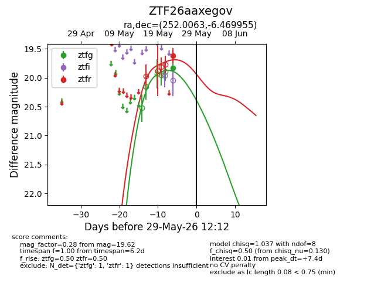
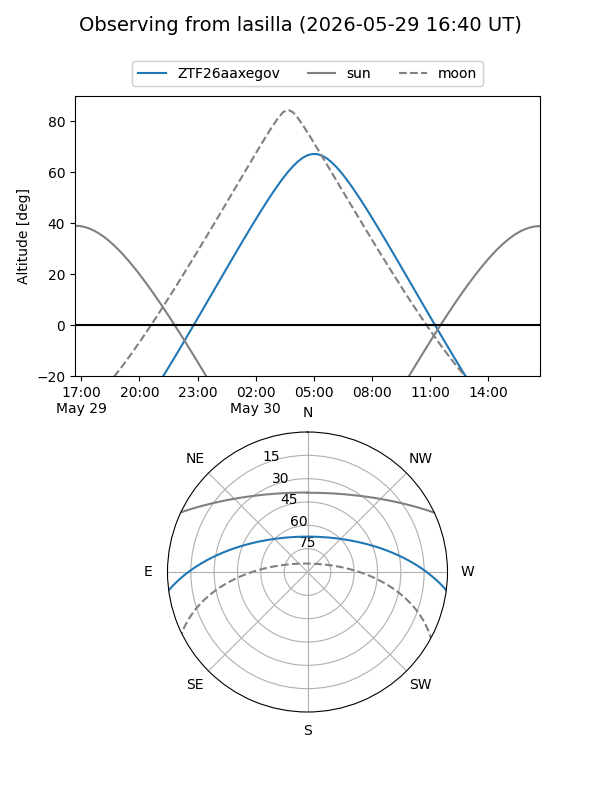
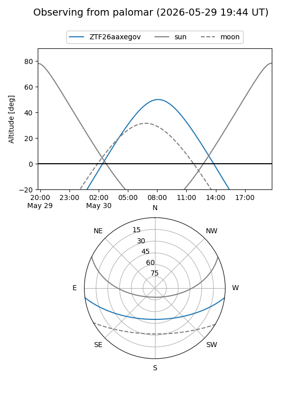
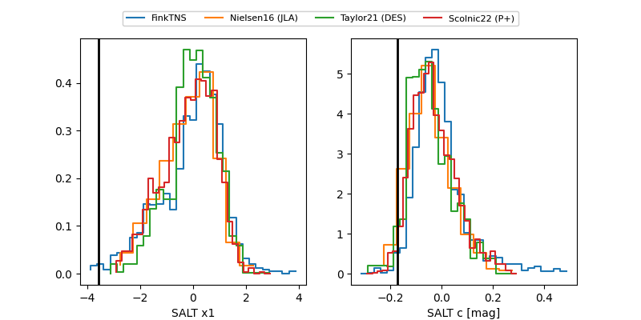

ZTF26aaxegov
Target ZTF26aaxegov at 2026-05-29 12:16
Aliases and brokers:
lsst-FINK: link
lsst-Lasair: link
lsst-ALeRCE: link
ztf-FINK: link
ztf-Lasair: link
ztf-ALeRCE: link
alt names
ZTF26aaxegov (ztf,fink_ztf)
Coordinates:
equatorial (ra, dec) = 252.0063,-6.46995
equatorial (HMS+DMS) = 16:48:01.52,-06:28:11.84
galactic (l, b) = (11.6281,+23.71156)
Flags:
Photometry:
last ztfg=19.83, ztfr=19.62
1 ztfg, 1 ztfr detections
Lightcurve

Visibility


Additional plots
